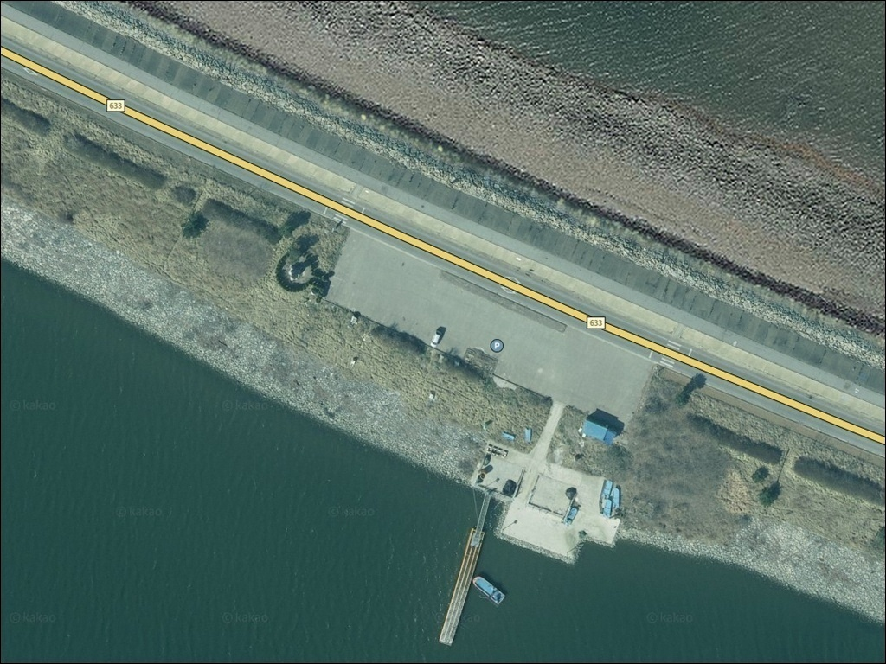
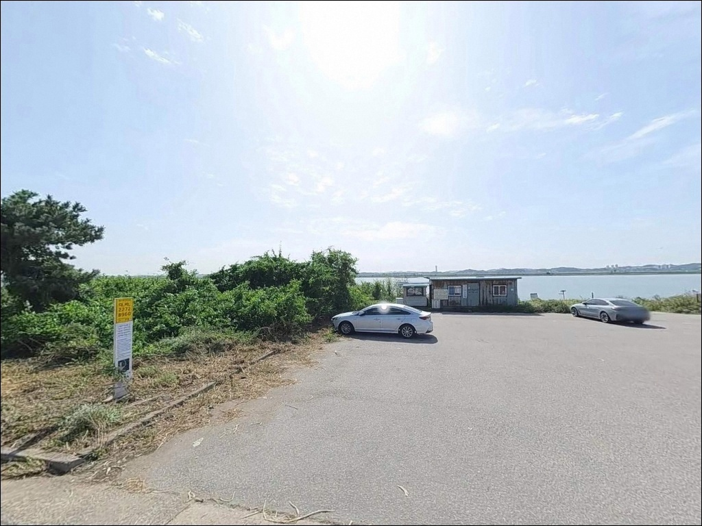
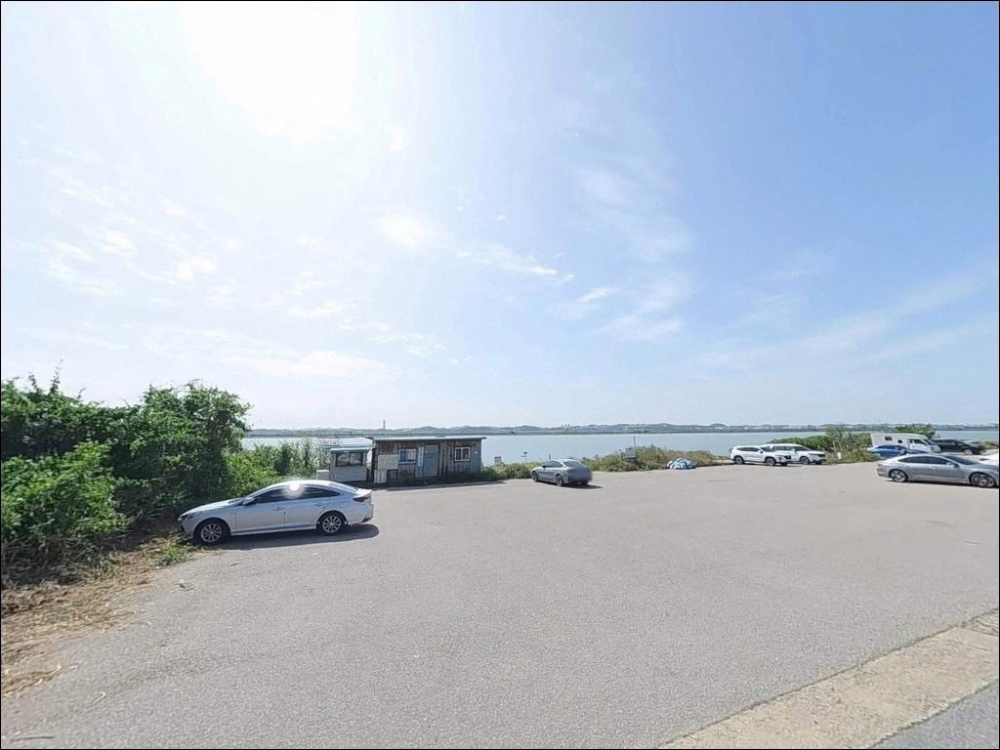
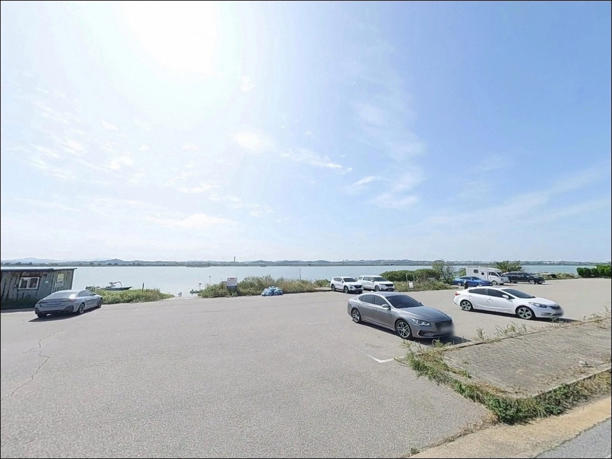
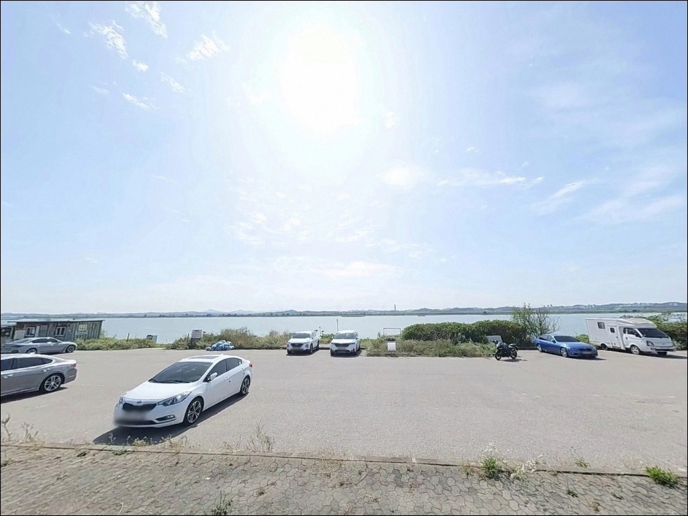
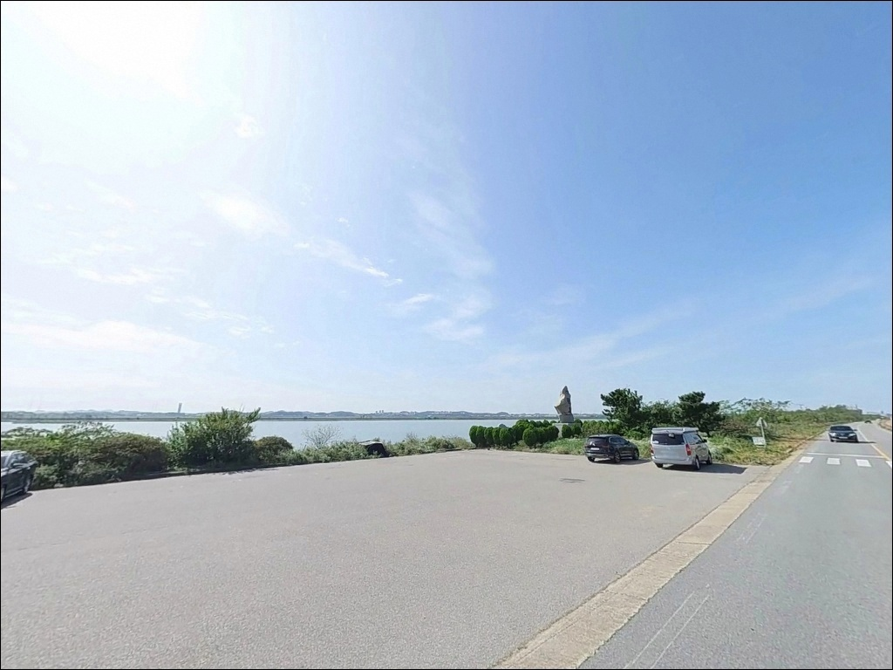
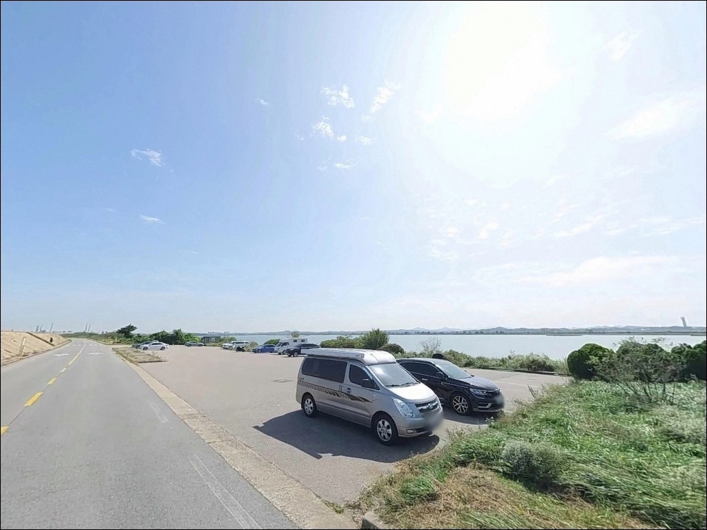
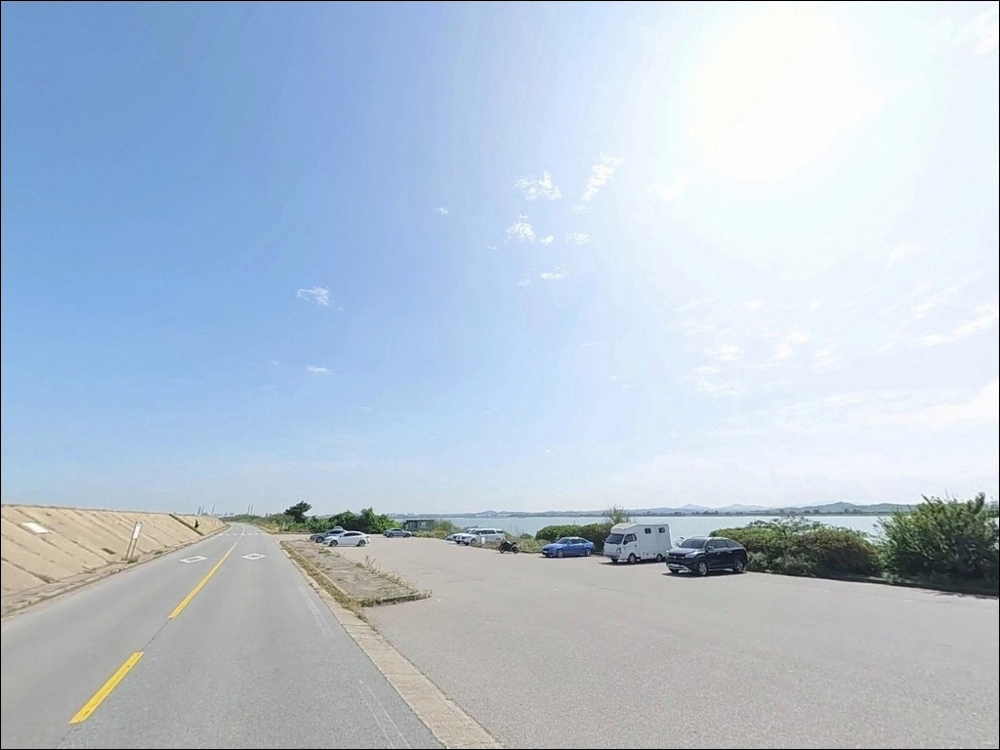
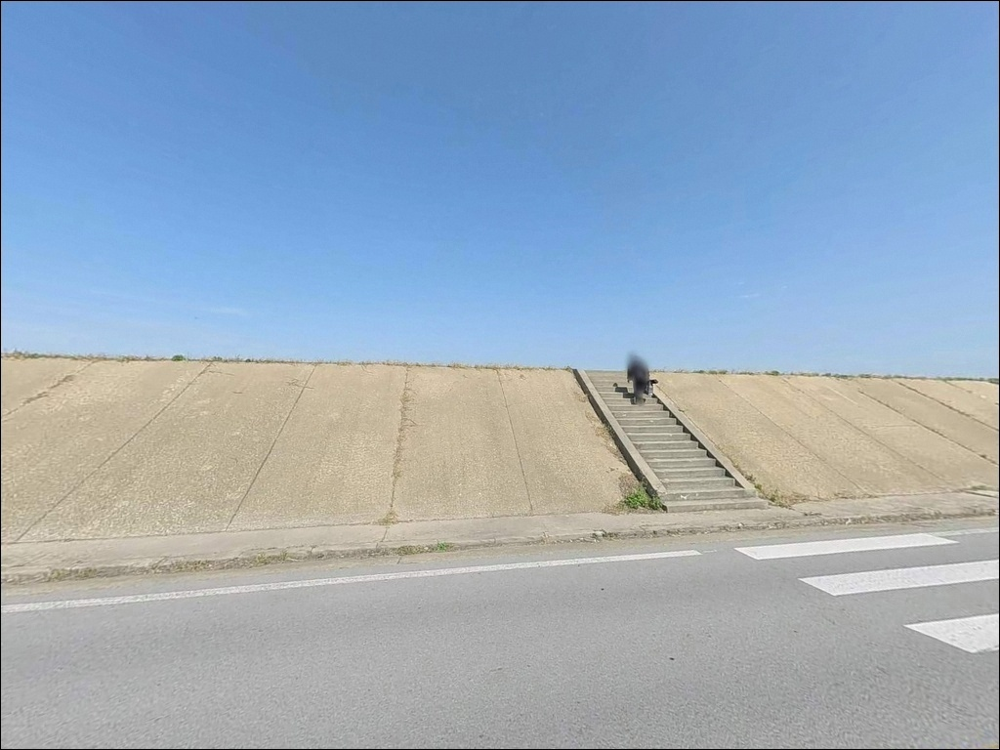

석문방조제 중간 주차장 2, 충남 당진시 노을빛이 스며드는 차박, 낚시 겸용 감성 장소


석문방조제 중간 주차장 2
충남 당진시 석문면 삼화리 1431
석문방조제를 처음 찾는 낚시인이
현장에서 가장 많이 틀리는 판단은
물때 확인 없이 석축에 내려서는 것입니다.
서해 방조제는 조석 간만차가 극단적으로 크며,
잘못된 타이밍에 석축 아래로 내려갔다가
퇴로를 잃거나 미끄럼 사고를 겪는 일이
이 구간에서 반복되고 있습니다.
이 글은 석문방조제 중간 주차장 2 구간의
진입 여건, 지형 특성,
물때별 낚시 적용 기준을 중심으로 정리합니다.
조황 단정이나 특정 어종 보장은
이 글의 범위에 포함되지 않습니다.

1. 진입 동선과 주차장 접근 여건
석문방조제는 왕복 2차선 포장 도로가
방조제 위를 통과하는 구조입니다.
진입 자체는 일반 승용차 기준으로
특별한 어려움이 없는 편이며,
중간 주차장 구간까지
포장도로 직접 진입이 가능합니다.
방조제 제방 위로 오르는 계단이
조성된 구간을 통해 석축으로 이동합니다.
중간 주차장은 비교적 넓은 공간으로
알려진 구간이며,
낚시 차량이 대기하는 형태로
활용되는 편입니다.
대형 SUV나 캠핑카라면
방조제 도로 통행 차량 흐름과
주차 여유 공간을 현장에서 먼저 확인하는 것이
안전한 순서입니다.
방조제 도로 위는 야간에도
차량 통행이 완전히 끊기지 않는 구간입니다.
주차 후에는 통행 동선을 막지 않는 자리를
먼저 잡아야 하며,
야간 주차 시에는 차량에
반사재를 부착해 두는 것이 기본입니다.

2. 야간 체류 여건과 방조제 차박 조건
방조제 중간 구간은 주변에 민가가 거의 없는 편입니다.
석문호와 서해를 양쪽으로 두고 있어
바람 영향을 직접 받는 개방형 지형이며,
야간에는 도로 위 가로등 외에
석축 하단까지 조명이 닿지 않는
어두운 환경이 됩니다.
개인 조명 장비는 필수입니다.
방조제 위 주차 공간을 활용한
낚시 대기형 차박이 이루어지는 곳으로
알려진 구간입니다.
다만 야간에도 차량 통행이 이어지고
바람이 강한 날에는 체류 환경이
상당히 불편해질 수 있는 지형임을
감안해야 합니다.
방조제 일부 구간(22~30번 구간)에 대해
야간 출입 통제가 적용되고 있습니다.
삼화리 1431번지 구간이 이 범위에
포함되는지는 현장 표지판으로 확인이 필요합니다.
통제 구간 야간 출입 시 과태료가 부과되므로
진입 전 반드시 확인해야 합니다.


3. 주변 편의시설 및 자급 준비 기준
반경 약 2.5km 내에
세븐일레븐 당진석문방조제점이 위치하며,
SK에너지 석문주유소도
방조제 접근 동선 인근에서 확인됩니다.
최소한의 보급 인프라는
이 범위 안에서 해결 가능한 수준입니다.
중간 주차장 2 구간 자체에는
확정된 화장실 위치 정보가 없습니다.
방조제 구간 일부에 공중화장실이
설치된 것으로 알려지나
정확한 거리는 현장 확인이 필요합니다.
완전 자급 체제로 진입하는 것이
현실적인 준비 방식입니다.
식수, 식량, 응급 상비약은
출발 전에 모두 갖춰야 합니다.
반경 10km권에는 장고항 어판장 일대와
해물칼국수 식당이 있어
이 동선을 식사 거점으로
활용하는 방식도 효율적입니다.

4. 방문 전 반드시 챙겨야 할 준비사항
가장 먼저 확인할 것은 물때입니다.
바다타임에서 석문방조제 기준 물때를 확인하고,
사리 전후에는 만조 후 약 2시간이 지난 시점부터
루어낚시에 적정한 조류 조건이 형성되는 편입니다.
조금 물때에는 간조에도 진입 가능한 편이며,
물때 판단이 출조 성패를 결정하는
구조입니다.
석축 진입을 위해서는 릿지화 또는
스파이크가 달린 장화가 필수입니다.
석축과 돌무더기는 이끼·해조류로
매우 미끄러운 편이며,
운동화나 일반 장화로는
부상 위험이 높은 구간입니다.
구명조끼는 착용이 권장됩니다.
밑걸림이 잦은 석축 구조 특성상
여분 채비는 넉넉하게 준비해야 합니다.
기상 예보에서 강풍이나 파도 경보가 있을 경우
석축 접근 자체를 자제하는 것이 원칙입니다.
최신 조황은 가기 전에 꼭 검색해 보시기 바랍니다.

5. 물때를 모르면 석축 진입 타이밍을 놓치는 이유
석문방조제는 충남 당진시 송산면 가곡리에서
석문면 장고항리를 잇는 약 6,600m 규모의
직선형 대형 방조제입니다.
외측은 서해 개방 수면에 노출되어
조류 영향을 직접 받는 구조이며,
내측으로는 석문호 담수호가 자리합니다.
이단 석축 구조 앞으로 돌무더기 구간이
이어지는 것이 이 포인트의 기본 지형입니다.
서해 방조제 특성상 만조 시에는
석축 상단 근처까지 수위가 올라와
수심 2~4m 범위를 형성하지만,
간조 시에는 석축 하단과 돌무더기가 드러나며
진입 가능한 위치 자체가 달라집니다.
돌무더기 경계선 부근은 조류가 걸리는 구간으로
루어 반응이 살아나는 자리입니다.
반면 물이 빠진 직후 석축 표면은
이끼와 해조류가 덮여 매우 미끄러운 상태입니다.
물때 파악 없이 내려선 석축이
퇴로를 잃는 상황으로 이어질 수 있습니다.
밑걸림이 잦은 구조이므로
여분 채비를 반드시 충분히 준비해야 합니다.


6. 포인트 지형에 어울리는 낚시 스타일
이 포인트에서 가장 활발하게 활용되는 방식은
루어낚시입니다.
광어와 우럭을 타깃으로
지그헤드+웜 채비나 프리리그로
돌무더기 경계선을 이동하며 탐색하는 방식이
석축 워킹 구조와 가장 잘 맞는 스타일입니다.
원투낚시도 이 포인트 구조에 맞습니다.
정조 타이밍에 맞춰 외해 방향으로
채비를 멀리 보내
바닥층을 탐색하는 방식이 유효합니다.
9월 이후에는 삼치가 외해 쪽으로
회유하는 시즌이 열리는 편입니다.
메탈지그를 외해 방향으로 캐스팅하는 방식으로
탐색해볼 만한 시기이며,
전반적인 주요 시즌은 5월부터 11월로
이 기간에 방문 빈도가 높은 구간입니다.
찌낚시는 수중 여밭 경계 구간에서
만조 전후 타이밍에 시도해볼 수 있습니다.

7. 대안 포인트와 플랜B 동선
석문방조제 중간 주차장 2 구간이
조류나 기상 여건으로 여의치 않을 때
가장 먼저 이동할 대안은 장고항입니다.
방조제 끝단에 인접한 국가어항으로
진입과 주차·편의시설이 안정적이며,
광어·우럭·쭈꾸미를 대상으로 한
선상낚시 출조 업체가 다수 운영됩니다.
방조제 입구 방향의
성구미 선착장도 대안으로 활용됩니다.
방파제 워킹 낚시 형태로 접근 가능하며,
방조제 구간에 비해
진입과 체류 여건이 안정적인 편입니다.
차박 대안으로는 마섬항이
노지 차박 후기가 있는 포인트로 알려져 있습니다.
방조제 구간에서 바람이 심하거나
야간 체류 조건이 맞지 않을 경우
마섬항 방향으로 이동하는 동선을
플랜B로 두는 편이 좋습니다.

물때와 석축 안전,
이 두 가지가 석문방조제의 전부입니다
루어로 광어·우럭을 노리거나
9월 이후 삼치 시즌을 기대하는 낚시인이라면
석문방조제 석축 구조는
잘 맞는 지형 조건입니다.
워킹 방식으로 돌무더기 경계를 이동하며
탐색하는 스타일이 이 포인트의
기본 공략 방식입니다.
반면 물때 확인 없이 진입하거나
야간 통제 구간 여부를 확인하지 않고
석축에 내려서면 상황이 크게 달라집니다.
릿지화·구명조끼·여분 채비,
그리고 물때 하나만 제대로 맞춰도
이 포인트는 충분히 다시 찾게 되는 구간입니다.
편의시설 없는 방조제 구간에서
석문호 내측을 바라보며 하룻밤 머무는
차박 여행자라면,
야간 통제 여부만 미리 확인해두면
낚시와 차박을 조용히 즐기기에
나쁘지 않은 출조지가 됩니다.